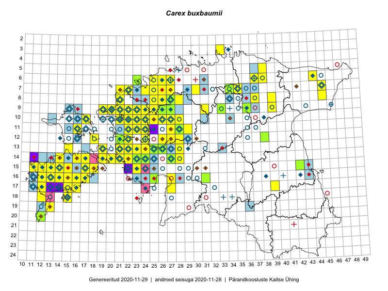

Carex buxbaumii
Uuendatud: 2016-12-07
Kaardile koondatud taksonid: Carex buxbaumii Wahlenb.

Kaart põhineb 142 kirjel, neist vaatlusi 128 ja eksemplare 14. Taksonit on leitud 77 ruudust.
| Ruut | Vaatleja(d) | Vaatlusaeg | Kirje tüüp | Viide andmebaasikirjele |
|---|---|---|---|---|
| 12-28 | Tiit Hallikma, Toomas Kukk, Indrek Tammekänd | 2015-06-09 | ruut/ala | vaata PlutoFis |
| 15-18 | Toomas Kukk, Eerik Leibak | 2015-08-08 | ruut/ala | vaata PlutoFis |
| 10-17 | Toomas Kukk, Eerik Leibak | 2015-08-12 | ruut/ala | vaata PlutoFis |
| 06-44 | Peedu Saar, Liina Oja | 2015-07-21 | ruut/ala | vaata PlutoFis |
| 16-12 | Toomas Kukk, Mari Reitalu | 2014-06-20 | ruut/ala | vaata PlutoFis |
| 18-15 | Toomas Kukk | 2014-06-18 | ruut/ala | vaata PlutoFis |
| 14-27 | Tiit Hallikma, Toomas Kukk, Indrek Tammekänd | 2015-06-08 | ruut/ala | vaata PlutoFis |
| 12-24 | Tiit Hallikma, Toomas Kukk | 2015-08-24 | ruut/ala | vaata PlutoFis |
| 14-16 | Ott Luuk, Elle Roosaluste, Jaak-Albert Metsoja | 2015-06-15 | ruut/ala | vaata PlutoFis |
| 18-15 | Ott Luuk, Elle Roosaluste, Jaak-Albert Metsoja | 2015-06-16 | ruut/ala | vaata PlutoFis |
| 16-17 | Peedu Saar | 2015-09-07 | ruut/ala | vaata PlutoFis |
| 14-17 | Meeli Mesipuu, Kadri Tali | 2015-07-08 | ruut/ala | vaata PlutoFis |
| 14-17 | Meeli Mesipuu, Kadri Tali | 2015-07-08 | punkt | vaata PlutoFis |
| 14-17 | Meeli Mesipuu | 2015-07-08 | punkt | vaata PlutoFis |
| 14-16 | Meeli Mesipuu | 2015-07-10 | ruut/ala | vaata PlutoFis |
| 14-16 | Meeli Mesipuu | 2015-07-10 | punkt | vaata PlutoFis |
| 17-39 | Thea Kull, Peedu Saar | 2015-06-17 | ruut/ala | vaata PlutoFis |
| 14-19 | Meeli Mesipuu | 2015-07-11 | ruut/ala | vaata PlutoFis |
| 14-19 | Meeli Mesipuu | 2015-07-11 | punkt | vaata PlutoFis |
| 14-19 | Meeli Mesipuu | 2015-07-11 | punkt | vaata PlutoFis |
| 10-22 | Toomas Kukk, Thea Kull | 2014-08-21 | ruut/ala | vaata PlutoFis |
| 11-22 | Toomas Kukk, Thea Kull | 2014-08-21 | ruut/ala | vaata PlutoFis |
| 10-23 | Toomas Kukk, Thea Kull | 2014-08-22 | ruut/ala | vaata PlutoFis |
| 14-24 | Toomas Kukk, Ott Luuk, Sander Laherand | 2014-08-24 | ruut/ala | vaata PlutoFis |
| 07-34 | Jana-Maria Habicht, Ester Valdvee | 2015-07-20 | ruut/ala | vaata PlutoFis |
| 15-23 | Indrek Tammekänd | 2015-04-06 | ruut/ala | vaata PlutoFis |
| 13-25 | Indrek Tammekänd, Katrin Aavik | 2015-06-15 | ruut/ala | vaata PlutoFis |
| 14-22 | Indrek Tammekänd | 2015-05-31 | ruut/ala | vaata PlutoFis |
| 09-36 | Jana-Maria Habicht, Ester Valdvee | 2015-08-15 | ruut/ala | vaata PlutoFis |
| 09-21 | Ott Luuk, Peedu Saar | 2015-08-26 | ruut/ala | vaata PlutoFis |
| 12-22 | Ott Luuk, Peedu Saar | 2015-08-24 | ruut/ala | vaata PlutoFis |
| 11-29 | Ott Luuk, Toivo Sepp | 2015-08-20 | ruut/ala | vaata PlutoFis |
| 19-13 | Oliver Parrest | 2015-07-01 | ruut/ala | vaata PlutoFis |
| 13-23 | Ott Luuk, Peedu Saar | 2014-08-29 | ruut/ala | vaata PlutoFis |
| 16-13 | Mari Reitalu | 2015-08-29 | ruut/ala | vaata PlutoFis |
| 17-12 | Mari Reitalu | 2014-08-31 | ruut/ala | vaata PlutoFis |
| 17-12 | Mari Reitalu | 2015-07-01 | ruut/ala | vaata PlutoFis |
| 17-12 | Mari Reitalu | 2014-09-02 | ruut/ala | vaata PlutoFis |
| 17-12 | Mari Reitalu | 2015-08-27 | ruut/ala | vaata PlutoFis |
| 07-25 | Erkki Otsman, Sergei Smirnov | 2015-07-17 | ruut/ala | vaata PlutoFis |
| 17-12 | Mari Reitalu | 2015-06-19 | ruut/ala | vaata PlutoFis |
| 13-24 | Rein Kalamees, Kersti Püssa | 2015-06-29 | ruut/ala | vaata PlutoFis |
| 14-19 | Meeli Mesipuu | 2015-06-20 | ruut/ala | vaata PlutoFis |
| 14-19 | Meeli Mesipuu | 2015-06-20 | punkt | vaata PlutoFis |
| 16-12 | Mari Reitalu | 2015-08-23 | ruut/ala | vaata PlutoFis |
| 16-12 | Mari Reitalu | 2015-06-28 | ruut/ala | vaata PlutoFis |
| 16-12 | Mari Reitalu | 2015-06-16 | ruut/ala | vaata PlutoFis |
| 15-11 | Mari Reitalu, Oliver Parrest | 2015-07-16 | ruut/ala | vaata PlutoFis |
| 10-25 | Aat Sarv | 2015-06-29 | ruut/ala | vaata PlutoFis |
| 12-22 | Thea Kull, Eerik Leibak | 2015-08-27 | ruut/ala | vaata PlutoFis |
| 11-24 | Aat Sarv | 2015-06-24 | ruut/ala | vaata PlutoFis |
| 17-16 | Sirje Azarov, Aira Alasi | 2015-08-12 | ruut/ala | vaata PlutoFis |
| 16-15 | Karin Kikas, Elle Rajandu | 2015-07-20 | ruut/ala | vaata PlutoFis |
| 10-26 | Peedu Saar, Rein Kalamees, Kersti Püssa | 2014-06-12 | ruut/ala | vaata PlutoFis |
| 09-26 | Peedu Saar, Kersti Püssa, Rein Kalamees, Toomas Kukk | 2014-06-11 | ruut/ala | vaata PlutoFis |
| 09-26 | Thea Kull, Meeli Mesipuu, Eerik Leibak | 2014-06-11 | ruut/ala | vaata PlutoFis |
| 10-24 | Hanna-Eliisa Luts, Tõnu Ploompuu, Anna-Grete Rebane | 2015-07-19 | ruut/ala | vaata PlutoFis |
| 11-27 | Aat Sarv | 2015-05-26 | ruut/ala | vaata PlutoFis |
| 09-27 | Aat Sarv | 2015-07-24 | ruut/ala | vaata PlutoFis |
| 10-22 | Tõnu Ploompuu | 2015-08-21 | ruut/ala | vaata PlutoFis |
| 11-28 | Hanna-Eliisa Luts, Tõnu Ploompuu | 2015-07-21 | ruut/ala | vaata PlutoFis |
| 09-25 | Meelis Muuga, Tõnu Ploompuu | 2015-08-17 | ruut/ala | vaata PlutoFis |
| 05-38 | Toomas Kukk, Thea Kull | 2016-05-26 | ruut/ala | vaata PlutoFis |
| 13-26 | Thea Kull | 2016-06-22 | ruut/ala | vaata PlutoFis |
| 13-25 | Thea Kull | 2016-06-22 | ruut/ala | vaata PlutoFis |
| 13-25 | Thea Kull | 2016-06-22 | punkt | vaata PlutoFis |
| 06-25 | Toomas Kukk, Sander Laherand | 2016-07-05 | ruut/ala | vaata PlutoFis |
| 14-28 | Thea Kull, Tiit Hallikma | 2016-07-08 | ruut/ala | vaata PlutoFis |
| 14-23 | Thea Kull, Eerik Leibak | 2016-07-05 | ruut/ala | vaata PlutoFis |
| 13-28 | Thea Kull, Tiit Hallikma | 2016-07-08 | ruut/ala | vaata PlutoFis |
| 16-25 | Thea Kull, Helle Mäemets | 2016-07-04 | ruut/ala | vaata PlutoFis |
| 12-28 | Mari Reitalu, Eerik Leibak | 2016-07-06 | ruut/ala | vaata PlutoFis |
| 14-28 | Thea Kull, Tiit Hallikma | 2016-07-08 | punkt | vaata PlutoFis |
| 13-28 | Thea Kull, Tiit Hallikma | 2016-07-08 | punkt | vaata PlutoFis |
| 13-28 | Thea Kull, Tiit Hallikma | 2016-07-08 | punkt | vaata PlutoFis |
| 13-25 | Thea Kull | 2016-06-22 | punkt | vaata PlutoFis |
| 14-23 | Thea Kull, Eerik Leibak | 2016-07-05 | punkt | vaata PlutoFis |
| 06-26 | Ulvi Selgis | 2016-07-16 | ruut/ala | vaata PlutoFis |
| 14-21 | Mari Reitalu, Oliver Parrest | 2016-07-04 | ruut/ala | vaata PlutoFis |
| 06-25 | Sander Laherand, Toomas Kukk | 2016-07-05 | punkt | vaata PlutoFis |
| 09-39 | Ott Luuk, Eerik Leibak | 2016-08-09 | ruut/ala | vaata PlutoFis |
| 14-14 | Peedu Saar, Maret Gerz | 2016-08-12 | ruut/ala | vaata PlutoFis |
| 13-26 | Maret Gerz, Liina Oja | 2016-07-08 | ruut/ala | vaata PlutoFis |
| 12-24 | Thea Kull | 2016-08-12 | punkt | vaata PlutoFis |
| 13-22 | Aat Sarv, Maret Gerz | 2016-07-05 | ruut/ala | vaata PlutoFis |
| 11-23 | Aat Sarv, Maret Gerz | 2016-07-06 | ruut/ala | vaata PlutoFis |
| 10-23 | Aat Sarv, Maret Gerz | 2016-07-06 | ruut/ala | vaata PlutoFis |
| 13-21 | Aat Sarv, Maret Gerz | 2016-07-05 | ruut/ala | vaata PlutoFis |
| 14-24 | Aat Sarv, Oliver Parrest | 2016-07-18 | ruut/ala | vaata PlutoFis |
| 13-15 | Maret Gerz, Peedu Saar | 2016-08-11 | ruut/ala | vaata PlutoFis |
| 08-39 | Meeli Mesipuu, Liina Oja | 2016-07-29 | ruut/ala | vaata PlutoFis |
| 08-39 | Meeli Mesipuu, Liina Oja | 2016-07-29 | punkt | vaata PlutoFis |
| 12-24 | Sirje Azarov, Meeli Mesipuu | 2016-07-05 | ruut/ala | vaata PlutoFis |
| 10-25 | Sirje Azarov, Meeli Mesipuu | 2016-07-06 | ruut/ala | vaata PlutoFis |
| 10-28 | Timo Luhamäe, Peedu Saar | 2016-07-06 | punkt | vaata PlutoFis |
| 10-22 | Sirje Azarov, Oliver Parrest | 2016-07-07 | ruut/ala | vaata PlutoFis |
| 11-22 | Sirje Azarov, Oliver Parrest | 2016-07-07 | ruut/ala | vaata PlutoFis |
| 07-30 | Toomas Kukk, Peedu Saar | 2016-09-09 | ruut/ala | vaata PlutoFis |
| 07-22 | Mari Reitalu, Eerik Leibak | 2016-07-07 | ruut/ala | vaata PlutoFis |
| 08-37 | Mari Reitalu, Triin Reitalu | 2016-07-12 | ruut/ala | vaata PlutoFis |
| 13-19 | Mari Reitalu, Sirje Azarov | 2016-08-16 | ruut/ala | vaata PlutoFis |
| 14-19 | Mari Reitalu, Sirje Azarov | 2016-08-18 | ruut/ala | vaata PlutoFis |
| 14-20 | Mari Reitalu, Sirje Azarov | 2016-08-17 | ruut/ala | vaata PlutoFis |
| 19-13 | Mari Reitalu, Sirje Azarov | 2016-07-31 | ruut/ala | vaata PlutoFis |
| 20-12 | Mari Reitalu, Sirje Azarov | 2016-08-08 | ruut/ala | vaata PlutoFis |
| 14-23 | Erkki Otsman, Sergei Smirnov | 2016-06-22 | ruut/ala | vaata PlutoFis |
| 15-15 | Meeli Mesipuu | 2016-09-23 | ruut/ala | vaata PlutoFis |
| 16-25 | Helle Mäemets, Thea Kull | 2016-07-04 | punkt | vaata PlutoFis |
| 08-21 | Tiit Hallikma, Tõnu Ploompuu | 2016-07-07 | ruut/ala | vaata PlutoFis |
| 09-36 | Peedu Saar, Liina Oja, Susanna Vain | 2016-07-25 | ruut/ala | vaata PlutoFis |
| 14-17 | Ott Luuk, Peedu Saar | 2016-08-29 | ruut/ala | vaata PlutoFis |
| 10-27 | Peedu Saar, Timo Luhamäe, Johannes Kõdar | 2016-07-06 | ruut/ala | vaata PlutoFis |
| 10-28 | Peedu Saar, Timo Luhamäe, Johannes Kõdar | 2016-07-06 | ruut/ala | vaata PlutoFis |
| 09-33 | Ott Luuk, Eerik Leibak | 2016-07-25 | ruut/ala | vaata PlutoFis |
| 15-15 | Meeli Mesipuu | 2016-09-23 | punkt | vaata PlutoFis |
| 07-21 | Meeli Mesipuu | 2016-07-07 | ruut/ala | vaata PlutoFis |
| 07-21 | Meeli Mesipuu | 2016-07-07 | punkt | vaata PlutoFis |
| 12-24 | Meeli Mesipuu, Sirje Azarov | 2016-07-05 | punkt | vaata PlutoFis |
| 12-24 | Meeli Mesipuu, Sirje Azarov | 2016-07-05 | punkt | vaata PlutoFis |
| 10-26 | Meeli Mesipuu, Sirje Azarov | 2016-07-06 | ruut/ala | vaata PlutoFis |
| 10-25 | Meeli Mesipuu, Sirje Azarov | 2016-07-06 | punkt | vaata PlutoFis |
| 09-20 | Kadi-Liis Kesler | 2015-06-25 | ruut/ala | vaata PlutoFis |
| 14-21 | Toomas Kukk | 2012-06-25 | ruut/ala | vaata PlutoFis |
| 14-21 | Toomas Kukk | 2013-06-29 | ruut/ala | vaata PlutoFis |
| 10-21 | Jaak-Albert Metsoja, Mari Metsoja | 2016-07-07 | ruut/ala | vaata PlutoFis |
| 12-27 | Jaak-Albert Metsoja, Mari Metsoja | 2016-07-05 | ruut/ala | vaata PlutoFis |
| 12-26 | Jaak-Albert Metsoja, Mari Metsoja | 2016-07-05 | ruut/ala | vaata PlutoFis |
| 08-26 | Jaak-Albert Metsoja, Mari Metsoja | 2016-07-04 | ruut/ala | vaata PlutoFis |
| 07-34 | Jana-Maria Habicht | 2015-07-20 | eksemplar | vaata PlutoFis |
| 11-28 | Ott Luuk | 2013-06-19 | eksemplar | vaata PlutoFis |
| 09-36 | Jana-Maria Habicht | 2015-08-15 | eksemplar | vaata PlutoFis |
| 12-21 | Thea Kull | 2016-08-12 | eksemplar | vaata PlutoFis |
| 12-21 | Thea Kull | 2016-08-12 | eksemplar | vaata PlutoFis |
| 12-21 | Thea Kull | 2016-08-12 | eksemplar | vaata PlutoFis |
| 12-21 | Thea Kull | 2016-08-12 | eksemplar | vaata PlutoFis |
| 16-25 | Thea Kull, Helle Mäemets | 2016-07-04 | eksemplar | vaata PlutoFis |
| 16-25 | Thea Kull, Helle Mäemets | 2016-07-04 | eksemplar | vaata PlutoFis |
| 16-25 | Thea Kull, Helle Mäemets | 2016-07-04 | eksemplar | vaata PlutoFis |
| 14-23 | Thea Kull, Eerik Leibak | 2016-07-05 | eksemplar | vaata PlutoFis |
| 14-23 | Thea Kull, Eerik Leibak | 2016-07-05 | eksemplar | vaata PlutoFis |
| 13-26 | Thea Kull | 2016-06-22 | eksemplar | vaata PlutoFis |
| 13-26 | Thea Kull | 2016-06-22 | eksemplar | vaata PlutoFis |